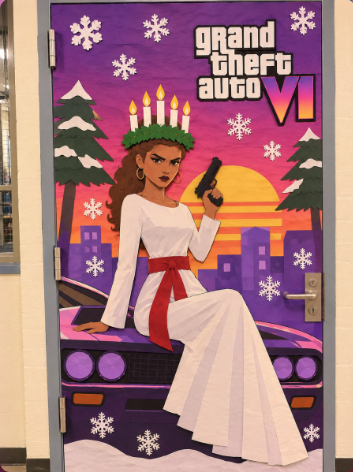

Klik direkte på døren
Hvert snefnug, lys, bogstav, vindue og hver lygte er sin egen del
med mål i cm og trin-for-trin-vejledning.
Samlet vejledning – sådan sættes døren sammen
Hovedidéen: Alt bygges på gulvet på ét stort stykke kraftpapir på 80 × 200 cm – ikke direkte på døren. Så kan flere arbejde samtidig, og selve ophængningen tager kun ca. 20 minutter.
1 · Underlag og skabeloner
- Klip kraftpapir på 80 × 200 cm – det er underlaget. Klip hullet til jeres dørhåndtag ud med det samme (der hvor det sidder på jeres dør).
- Motivet fylder 80 × cm – præcis billedets proportioner, så alle skabeloner passer 1:1. Læg motivet nederst på døren (sneen ved gulvet). De øverste ca. cm bliver ekstra lilla himmel med flere snefnug.
- Tegn et gitter på 10 × 10 felter over motivets område (hvert felt er 8 × cm).
- Tegn felt for felt omridset af de store former over fra billedet: figuren, bilen, logoet, solen, byen og juletræerne.
- Kalkér de store former over på bagepapir – de bliver skabeloner.
Skabeloner til print (1:1)
Alle 106 dele har en skabelon, tegnet direkte efter billedet – også kjolens dele, hår, ansigt (med øjenbryn, øjne, iris, næse, læber og øre), hænder, bygninger, sol, baggrund og bilens flader. Hvor en del ligger delvist under en anden (fx kølerhjelmen under kjolen), går skabelonen lidt ind under den forreste del, så der er noget at lime på.
Udskriv i 100 % (ikke “tilpas til side”), og tjek kontrolstregen på 5 cm nederst på hver side.
Vis alle skabeloner Download alle som PDF Vælg flere skabeloner og print pladsbesparende PDF kun A4-sider PDF kun A3-sider
2 · Lav alle dele
Klik på hver del på døren og følg trinene. Lav delene færdige løst, og skriv delens navn på bagsiden med blyant.
3 · Saml døren
Når alle dele er færdige, følger I den store samlevejledning herunder – med præcis placering i cm for hver eneste del.
Den store samlevejledning – når alle dele er færdige
Afsæt ca. 2½ time (to dobbeltlektioner er sikrest) til samlingen og ca. 20 min til ophængningen. Alt samles liggende på gulvet på underlaget – først til sidst hænges det hele op i ét stykke.
A · Før I starter – tjekliste
- Alle dele er færdige og har navnet skrevet på bagsiden med blyant (fx “Snefnug 7”). Læg dem i bunker efter lag (se tabellerne herunder).
- Underlaget: kraftpapir 80 × 200 cm med lilla baggrund og håndtagshul.
- Værktøj: limstift og hobbylim, dobbeltklæbende tape, skumpuder (3D), malertape, tommestok eller målebånd, lang lineal, blyant, viskelæder, saks og et billede af originalen (print eller tablet).
- Gulvplads på mindst 1,5 × 3 m – ryd et hjørne af klassen eller brug gangen.
- Mål jeres rigtige dør: sidder håndtaget, låsen og dørpumpen samme sted som på underlaget?
B · Roller (6 personer ad gangen)
- Holdleder – læser trinene op og krydser delene af i tabellen.
- 2 målere – sætter blyantskrydserne med tommestok (én måler fra venstre, én fra toppen).
- 2 limere – lægger delene på plads og limer dem.
- Kontrollant – sammenligner med billedet efter hvert lag og tager et foto ovenfra.
C · Gør underlaget klar
- Læg underlaget på gulvet med toppen væk fra jer og tape de fire hjørner fast med malertape, så det ikke glider.
- Mål cm ned fra toppen og tegn en svag vandret blyantslinje: her begynder motivet. Alt over linjen er ekstra himmel.
- Alle mål i tabellerne er til delens midtpunkt, målt fra underlagets venstre kant og fra toppen.
- Placér sådan: måleren fra venstre lægger tommestokken vandret, måleren fra toppen lodret – der hvor de mødes, sætter I et lille blyantskryds og skriver delens nummer ved siden af.
- Sæt krydserne for ét lag ad gangen – ellers bliver der for mange streger.
D · Tør-prøve før lim
Før hvert lag limes: læg alle dele i laget på plads uden lim. Kontrollanten tager et foto ovenfra og sammenligner med billedet. Først når det passer, limes delene – én ad gangen, så resten ikke flytter sig.
E · Saml lag for lag (bagfra og frem)
Det, der ligger længst væk, kommer på først. Klik på en del for at se den igen.
F · Slutkontrol på gulvet
- Ræk hånden hen over hele værket: sidder alle kanter fast? Lim løse hjørner med limstift.
- Stil jer på en stol og tag et foto ovenfra – ligner det billedet? Ret nu, ikke når det hænger.
- Lad limen tørre i mindst 30 minutter (gerne til næste dag), før I ruller værket op.
- Pak de løse 3D-dele (sløjfe, forreste snefnug) i en kasse – de sættes først på døren til sidst.
G · Transport og ophængning (4 personer)
- Rul værket forsigtigt op fra bunden mod toppen med billedet udad, så 3D-delene ikke bliver mast. Toppen ligger nu yderst.
- Rengør døren med en tør klud (ellers holder tapen ikke).
- To personer på stole holder rullen øverst ved døren og fastgør toppen med monteringstape i hjørnerne og på midten.
- Rul langsomt nedad, mens to personer glatter ud fra midten mod siderne og taper kanterne for hver ca. 30 cm.
- Klip håndtagshullet til, hvis det ikke passer helt, og tape kanten rundt om håndtaget pænt.
- Sæt de løse 3D-dele på med skumpuder: sløjfen og de forreste snefnug.
- Luk døren et par gange: åbner og lukker den, og virker håndtag og lås? Intet må dække dørpumpen.
- Tag et klassebillede foran døren!
H · Hvis noget går galt
- En del er for stor eller lille: placér den efter midtpunktet alligevel – en lille forskel ses ikke på afstand. Er det meget, så lav den om med skabelonen.
- Limen bobler eller papiret slår sig: brug limstift på store flader og hobbylim kun i små klatter.
- En del er limet forkert: lad limen tørre, og læg så en ny del ovenpå – det er nemmere end at pille.
- Tapen slipper døren: brug monteringstape eller Blu Tack i stedet for malertape (spørg pedellen, hvad der må bruges).
- Der mangler en del: spring den over og sæt den på bagefter – alle dele har deres egen placering i tabellen.